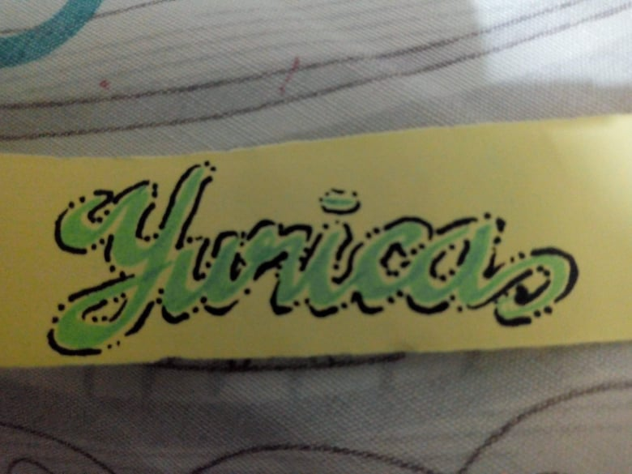

Web Development
Web development refers to building, creating, and an maintaining websites. It includes aspects such as web design, web publishing, web programming, and database management. While the terms "web developer" and "web designer" are often used synonymously, they do not mean the same thing
Playing Octavina
The octavina or Philippine octavina is a guitar-shaped Filipino instrument with a tuning similar to the laúd. Originally a Spanish instrument, the octavina was soon incorporated into other cultures, notably including Filipino culture..

Lettering/Drawing
Different individuals will go about opposite poles to produce something as simple as Drawing or as Lettering. Some of us might not even have the motivation to pick up because we believe that it is only meant for an artist..